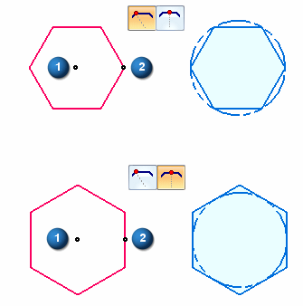

Draw a polygon

-
Choose the Polygon by Center command
 .
. -
Use the command bar to set the polygon options, such as:
-
The number of sides.
-
Whether the polygon is drawn by vertex or midpoint of a side.
-
-
Click where you want the center of the polygon (1).
-
Click to define the vertex or midpoint of the polygon (2) or you can enter a value in the edit boxes.
Note:The By Vertex option circumscribes a circle about the polygon.
The By Midpoint option inscribes a circle in the polygon.
Tip:
-
In 3D documents, a polygon consists of a series of connected lines that are constrained to a circle. In a draft document, the polygon circle is not created.
Learn more
Drawing 2D elementsLook up more details
Polygon by Center commandPolygon by Center command bar